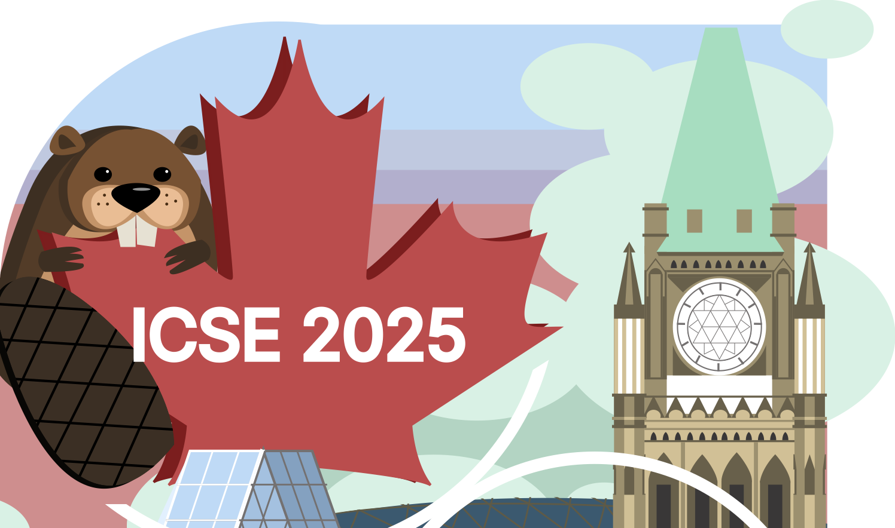

Incoming CS PhD student Fall 2026
Columbia University · 500 West 120 St, 406 Mudd · New York, NY 10027
Advised by Baishakhi Ray
“”
I am an incoming CS PhD student at Columbia advised by Baishakhi Ray and where I will work as part of the DAPLab. My research sits at the intersection of AI and software engineering with a focus on trust in AI coding agents. Learn more about the field here.
Currently, I am completing my undergrad in CS at Colby College with minors in math and econ financial markets. At Colby, my honors thesis was advised by Prof. Naser Al Madi where I built a web tool called Fishy to help programmers improve the quality of their code. I have also been a part of two NSF REUs at CMU, one in the domain of software engineering and the other in HCI.
Outside of research, I play ultimate frisbee semi-competitively, and I casually do digital design in the form of photoshop and video editing. Please feel free to reach out to chat or ask questions!
Policy alone is probably not the solution: A large-scale experiment on how developers struggle to design meaningful end-user explanations
Submitted for publication, 2026
Less Talk, More Code: Practice-Based Instruction Improves Programming Skill Acquisition
Accepted to Cognitive Science Society (CogSci), 2026
The Balancing Act of Policies in Developing Machine Learning Explanations
International Conference on Software Engineering (ICSE), 2025
2026

2025
Awarded best undergraduate research at ICSE 2025